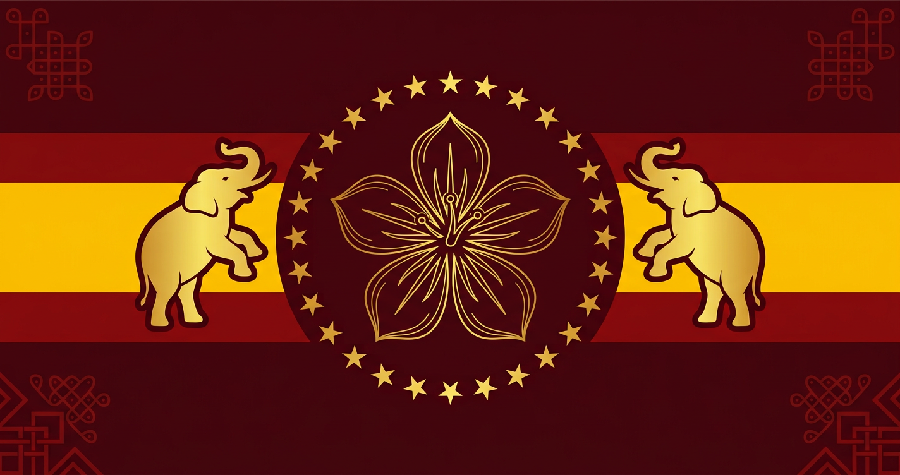

Periyar — Social Equality
Rationalism, self-respect and the relentless fight against caste and inequality — the resolve to build a society where every person is treated with dignity.
“பிறப்பொக்கும் எல்லா உயிர்க்கும்” — All are equal by birth
Tamilaga Vettri Kazhagam (TVK) is a movement rooted in secular social justice, honest administration and the timeless ideals of Periyar, Ambedkar and Kamaraj — now translating ten guarantees into action across all 38 districts of Tamil Nadu.

Founded on 2 February 2024 by C. Joseph Vijay (Thalapathy Vijay), Tamilaga Vettri Kazhagam — “Victory Federation of Tamil Nadu” — was born to offer a clean, principled alternative to decades of two-party dominance.
The party's flag—maroon bands of sacrifice and courage above and below, a golden band of prosperity in the centre—carries the Vaagai flower, the ancient Tamil symbol of victory, flanked by two rearing elephants of strength and unity, ringed by 28 stars for the 28 districts of unified Tamilagam.
In its first-ever Assembly election, TVK emerged as the single-largest party in Tamil Nadu, and on 10 May 2026 its leader took oath as Chief Minister at Nehru Stadium, Chennai — a historic break from nearly six decades of alternating Dravidian-party rule. The mandate of 2026 is simple: honest administration, measurable outcomes, and a victorious Tamil Nadu.
தமிழகம் வெல்லும் · தமிழ் வெல்லும்
TVK draws its guiding principles from three pillars of Tamil and Indian thought.
Rationalism, self-respect and the relentless fight against caste and inequality — the resolve to build a society where every person is treated with dignity.
Reservation, constitutional justice and empowerment of the marginalised — a society where opportunity and rights reach the last person in the queue.
Clean administration, discipline and educational upliftment — the Kamarajar model of a government that delivers and a leader who lives simply.
“பிறப்பொக்கும் எல்லா உயிர்க்கும்”
“All are equal by birth” — the immortal words of the Thirukkural, and the moral compass of every TVK policy.
Vijay announces the formation of TVK in Chennai and declares the party “battle-ready” for the 2026 Assembly elections.
The historic flag—Vaagai flower, twin elephants and 28 stars—and the party anthem are unveiled at the Panaiyur headquarters.
Nearly 8 lakh cadres gather as Vijay unveils the party's ideology and declares TVK will contest all 234 seats.
The 2026 manifesto is released — ₹2,500 women's support, ₹25 lakh health cover, ₹20 lakh education loans and more.
In a stunning debut, TVK wins 108 seats to become the single-largest party; Vijay wins Perambur by over 53,000 votes.
Vijay is sworn in as Chief Minister of Tamil Nadu at Nehru Stadium, Chennai, ending six decades of two-party rule.
The first Cabinet approves 436 schemes across 10 pillars — the election promises become a structured governance agenda.
The first TVK Budget delivers: ₹2,000 crore for student laptops, ₹812 crore wedding support, ₹560 crore newborn gold rings and one lakh affordable homes.
Five sectors. Forty schemes. Zero ambiguity — now being implemented across the state.
Filter by category or search — updates load automatically.
A leadership committed to action, accountability and the people of Tamil Nadu.
Party President · Chief Minister of Tamil Nadu
Founder of TVK and the people's choice of 2026 — leading the state's transformation from Perambur to Kanyakumari.
General Secretary
A legacy of service and grassroots organisation — steering the party's cadre network across the state.
Treasurer
Ensuring transparent, accountable party finances — every rupee accounted for, every promise delivered.
You don't need to be a leader to be part of the change. Every volunteer, every vote, every voice counts. Join the movement and help build a victorious Tamil Nadu.
Register as a supporter or volunteer and start contributing to the movement in your district. Party office bearers will connect with you.
Prefer email? Write to us at suggestions@tvkvijay.com
Head Office: 8th Avenue, Panaiyur, Chennai – 600119
Your support has been recorded. A party volunteer from your district will contact you soon.
வெற்றி நமதே!
Questions, ideas or support — we're listening.
8th Avenue, Panaiyur,
Chennai, Tamil Nadu – 600119
Public suggestions & ideas
suggestions@tvkvijay.comParty office helpline
+91 94440 05555Follow the movement
“Tamilaga Vettri Kazhagam” translates to “Tamil Nadu Victory Federation” — “Tamilaga” for the land of Tamils, “Vettri” for victory, and “Kazhagam” (federation), a term rooted in the state's political tradition.
TVK was founded on 2 February 2024. Its flag carries maroon bands of sacrifice and courage, a golden band of prosperity, the Vaagai flower of victory, twin rearing elephants of strength and unity, and 28 stars representing the districts of ancient Tamilagam.
In its maiden election, TVK won 108 seats — becoming the single-largest party in Tamil Nadu — and formed the government with the support of allies. Vijay contested from Perambur and Tiruchirappalli (East), winning both.
Use the registration form above — select your district and how you'd like to contribute. A party volunteer from your area will get in touch with you.
No. This is a community-built supporter website with information compiled from public sources. The party's official platforms are listed in the Contact section.